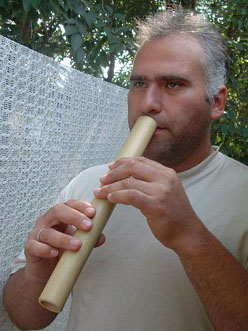

Здравейте хора,
Аз съм Емил Павлов, майстор на музикални инструменти.
Роден съм в България, град Враца, на 27 август 1968 г.
Започнах да се занимавам с музика на 4-годишна възраст.
Дарбата ми бе забелязана от моите родители.
Бях приет в музикалната школа в моя град.
Свирех на пиано в продължение на 12 години,
изучавах елементарна теория на музиката, солфеж,
хармония, история на музиката и това ми даде стабилна
основа за по-нататъшното ми развитие. На 16-годишна
възраст изучавах и свирих на кларинет, китара, хармоника,
дървени духови инструменти от българския фолклор.
Три години работих в Централния дворец за деца и юноши
в град Киев, Украйна, като ръководител на кръжок по изработка
на музикални инструменти. Децата се обучаваха да изработват
и да свирят на различни инструменти. Свиреха на четиригласие
техните народни мелодии, изучаваха солфеж, хармония и в края
на учебната година участвахме в национални и международни фестивали.
В България имам специализирана работилница за изработка на дървени
духови музикални инструменти. Когато работя, изключвам света около
себе си и се потапям в океана на звуците, като се вслушвам в природата
и изследвам материята като акустика и резонанс. След това подреждам
тоновете, за да се получи пълна хармония. Така всеки инструмент носи
своята душа и настроение.
Това е моят живот - да създавам нови звуци!